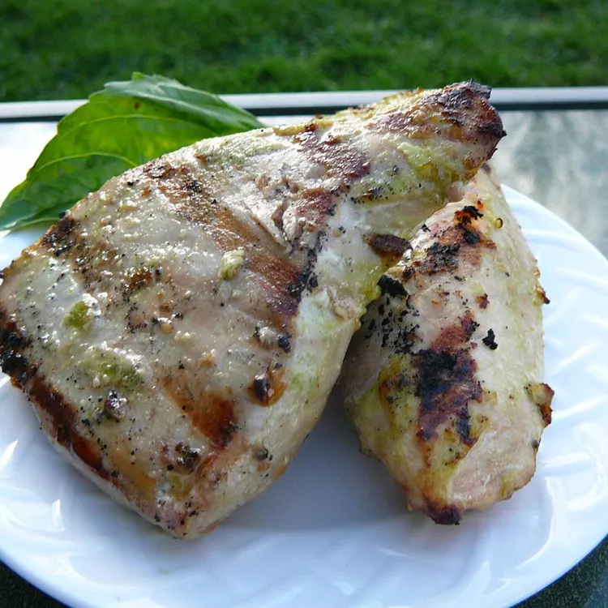

Grilled Jalapeno Tuna Steaks

Description
Charred tuna steaks with the flavor of jalapeno, garlic, and lime!
Ingredients
- 1 tablespoon olive oil
- 2 teaspoons lime juice
- 1 jalapeno pepper
- 3 loved garlic, minced
- salt and ground black pepper to taste
- 1 pound ahi tuna steaks
Steps
- Whisk olive oil, lime juice, jalapeno pepper, garlic, salt, and pepper together in a flat baking dish. Place the tuna steaks in the dish, turning to coat entirely in marinade; cover the dish with plastic wrap and refrigerate for 20 minutes.
- Preheat an outdoor grill for high heat and lightly oil the grate.
- Cook steaks on the preheated grill until beginning to firm and hot in the center, 5 to 7 minutes per side.
Go Back...